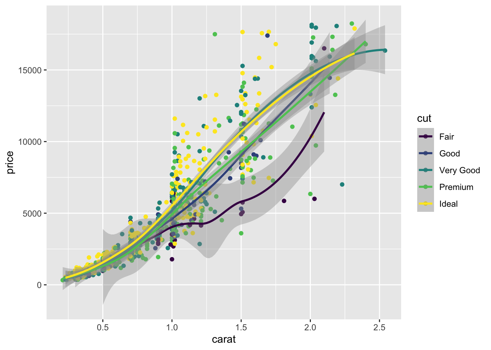
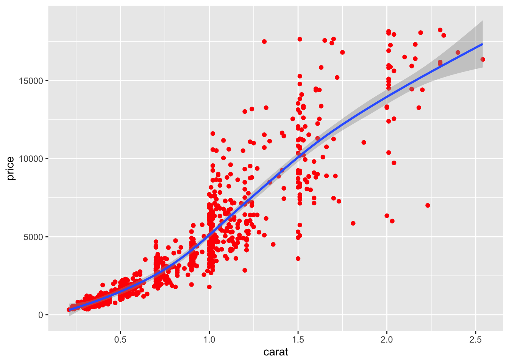

Rows: 600 Columns: 5
-- Column specification --------------------------------------------------------
Delimiter: ","
chr (4): ensembl_transcript_id, type, time, replicate
dbl (1): count
i Use `spec()` to retrieve the full column specification for this data.
i Specify the column types or set `show_col_types = FALSE` to quiet this message.
# save to have smaller namedata <- data_transcript_exp_tidy# examples of grouping by differently - type these into the console to see the differencegroup_by(data, type)
# specifying colors of plotsdiamonds_subset <- diamonds %>%sample_n(size =1000)# scatter plot with color by cut - aesthetics specified in the main "mapping"ggplot(data = diamonds_subset,mapping =aes(x = carat, y = price, color = cut)) +geom_point()
# scatter plot with color by cut - aesthetics specified in the geom "mapping"ggplot(data = diamonds_subset,mapping =aes(x = carat, y = price)) +geom_point(aes(color = cut))
# color specified in the main mapping will apply universally to all geomsggplot(data = diamonds_subset,mapping =aes(x = carat, y = price, color = cut)) +geom_point() +geom_smooth()
`geom_smooth()` using method = 'loess' and formula = 'y ~ x'

# color specified in the geom mapping only applies to that layerggplot(diamonds_subset, mapping =aes(x = carat, y = price)) +geom_point(aes(color = cut)) +geom_smooth()
`geom_smooth()` using method = 'gam' and formula = 'y ~ s(x, bs = "cs")'
# coloring by a single color - more information in the tutorial aboveggplot(data = diamonds_subset,mapping =aes(x = carat, y = price)) +geom_point(color ="red") +geom_smooth()
`geom_smooth()` using method = 'gam' and formula = 'y ~ s(x, bs = "cs")'

other
log10 - ?log10
How to use Help pages: help()
required vs. optional arguments: this is possible to distinguish if you have a well-documented function. If not, trial-an-error is how it goes.
Use of commas with multiple vars: Depends on the function. Look at the exact syntax required for specific functions on the cheatsheet to know what to use: col1, col2, col3, vs col1:col3, etc
Metacharacters “.” etc.: Refer to cheatsheet on Regex + stringr